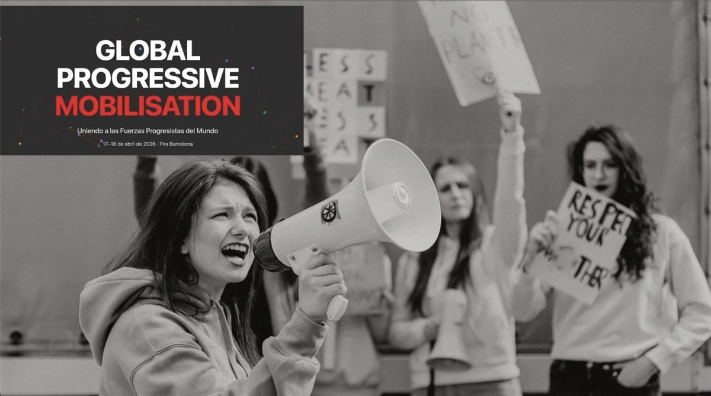

ON SOURCE: Global Progressive Mobilisation
Uniting the world's progressive forces for a more just, equal, and sustainable future.
About the Event
As the world faces critical turmoil, the Global Progressive Mobilisation (GPM) offers a necessary alternative to conservative and far-right forces. This platform aims to make progressive solutions visible and credible, proving they are the key to humanity’s prosperity. By uniting regions and generations, we will defend democracy and advance social justice. That is why we will come together in Barcelona, Spain, on 17–18 April 2026 for the inaugural Global Progressive Mobilisation — to turn conviction into action and ambition into results.
What is the GPM?
The GPM is a common space in which all participants contribute from their own perspectives, regions, and political traditions, bringing their experience, leadership, identity and diversity into a shared mobilisation rooted in mutual respect, equality, and a clear commitment to democratic principles.
On 17 April, partner-led seminars will focus on policy and essential communication tools. The event concludes on 18 April with a public day of solidarity, featuring global leaders’ speeches to translate shared values into coordinated action for the future.
GPM: A Moment of Collective Construction
Collective Effort
Following a series of debates and conversations over the past year among key, like-minded political leaders and actors from every continent, Pedro Sánchez and Stefan Löfven launched the Global Progressive Mobilisation (GPM) at the last PES Congress in Amsterdam, with the support of international leaders including President Lula da Silva. This initiative was warmly welcomed by the Socialist International Council at its 2025 meeting in Malta and by the Progressive Alliance Presidium meeting in Berlin.
Progressive Vision
The GPM is a space for the most influential progressive networks, organisations, and thinkers to align their visions and scale their impact. Over two days, leaders, activists, thinkers, and representatives of progressive parties and movements from all regions will meet to reflect, exchange, and coordinate on the defining challenges of our time. The Global Progressive Mobilisation is not an endpoint but the beginning of a long-term journey to build lasting cooperation and shared capacity among progressive forces worldwide.
Global Unity
The GPM is promoted by the political platforms of the Party of European Socialists and Democrats (PES), Socialist International (SI), and Progressive Alliance (PA). Under the GPM umbrella, leading political and policy networks are invited to amplify their collective impact, facilitating synergy and alignment among centre-left global actors. In 2026, invited partner organisations include International progressive organisations, trade unions, foundations, think tanks and NGOs sharing the same purpose.

SPEAKERS:
World leaders, activists, and thinkers shaping the progressive movement.
ON SOURCE: Global Progressive Mobilisation